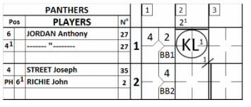
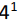
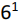
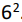
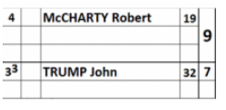

Changes in the batting order.
This is when a player takes the place of another player in the batting order. His name
should be noted in the appropriate place under the name of the replaced player. A vertical line, as in the
following example, indicates from which inning the new player began to play. The score-sheet of the opposing
team should show the point at which the fielding positions changed, as in the case of an internal change.
|

|
In the example, a heavy vertical line indicates that, in the
third inning, player RICHIE John batted for STREET Joseph. On the other sheet of the score report a
horizontal line is drawn, corresponding to the moment when player JORDAN Anthony took over the position
of second baseman, and RICHIE John moved to shortstop.> |
NOTE:Obviously, there is no vertical line for JORDAN as it was only a change in the
defensive positions.
When the new player enters the game in the offense, and only in this case, the new player
takes the position of Pinch Hitter “PH” if he has batted in place of the previous batter, or Pinch Runner “PR” if
he replaced the previous batter when the batter had already batted and was on base. In this case, either “PH” or
“PR” is recorded in the left square of the “Pos” column. As the player is to become a fielder, write the defense
position in the right square of the "Pos" column.
Be aware that when a DH is substituted by a new player, this new player also takes the
position of PH. In case the team enters the field without any fielding changes, this PH will be automatically
recorded DH.
| On the opposing team’s sheet,
 and
 are marked in the appropriate squares, next to the number of the inning in which the
change was made.
If, as occurs in the example, the new player takes a different defensive position from that held by
the player he replaces, there will be a corresponding change with another fielder. In this case we
will have both a change in the batting order and an internal change.
|

|
If a player is involved in an internal change and is then put back in his original position,
he takes back the defensive number he had originally, when he occupied that position the first time. Thus, in the
first example of an internal change, if player JORDAN goes back to playing shortstop, his plays from that moment
on will be noted with the number 6, not

.
| When more than three players succeed each other in the same
place in the batting order, or when for some reason there is not enough room to note a substitution in
the appropriate box, the name should be written in the space after the ninth position in the batting
order, and the number in the batting order should also be noted, as in the example opposite. Offense
and defense are recorded on the same line as the name is written; plays are written in the central
section of the score sheet.
|

|